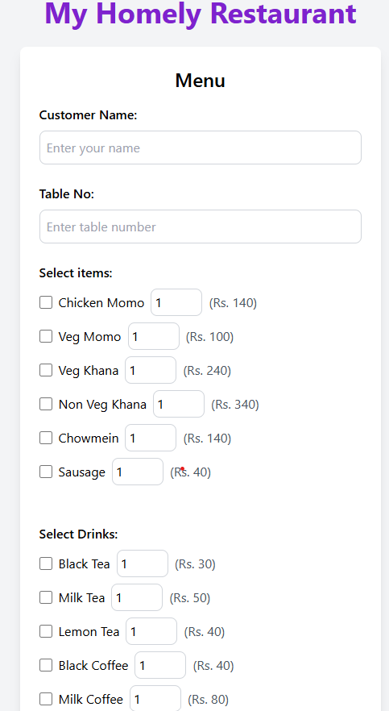
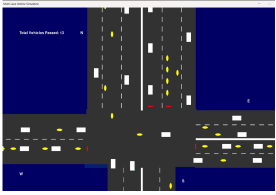
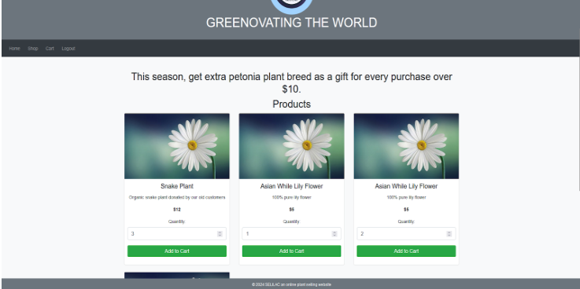

Chitto Order is a web-based system that allows customers to scan a QR code and access a restaurant menu directly in their browser without installing any application. Customers can place orders with quantity selection, remarks, and automatic total calculation.
Staff are provided with an interface to efficiently manage orders, including editing and deleting orders. Built using Flask, MySQL, HTML, JavaScript and Tailwind CSS, the system improves both customer experience and restaurant workflow.

This research-based simulation project explores the impact of introducing dedicated motorcycle lanes in Kathmandu.
Built using Python and Pygame, the project compares two scenarios: the current shared-lane system and a proposed dedicated-lane system.
Simulation results showed improved traffic flow, increased average speeds, reduced congestion, and fewer collision risks when motorcycle lanes were separated.

Selilac is an online plant-selling platform designed to make buying and selling indoor and outdoor plants easier and more accessible.
Built using HTML, CSS, JavaScript, jQuery, and PHP, the platform focuses on simplicity, efficient transactions, and promoting gardening culture.
